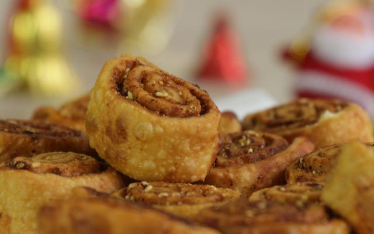

-
Vada pav at JJ garden
One of the oldest and most famous vada-pav stalls in town, this one is a must-try if you haven’t had it yet. Slightly expensive than your usual ones, but the size justifies the price. Don’t forget to ask for some churra on the side.
Where: 948, And 949, Bootee Street, Camp
When: 9 am to 10 pm
-
Misal Pav at bedekar
In the bylanes of Narayan Peth, there is an iconic spot that serves a mouth-watering misal. If you don’t like your misal too spicy, here you have an option to choose milder gravy. Mashed potatoes with pohe chivda, topped off with onions and coriander; this one is a crowd favourite.
Where: 418 Munjabacha Bol, Narayan Peth8
When: 8 am to 7 pm
-
Bhakarwadi At Chitale Bandhu
No one leaves Pune without trying the absolutely delish Bhakarvadis from Chitale Bandhu. No one!

Where: 759/54, Deccan Gymkhana, Opp Gharware Chowk
When: 9 am to 8:30 pm. Closed on Mondays.